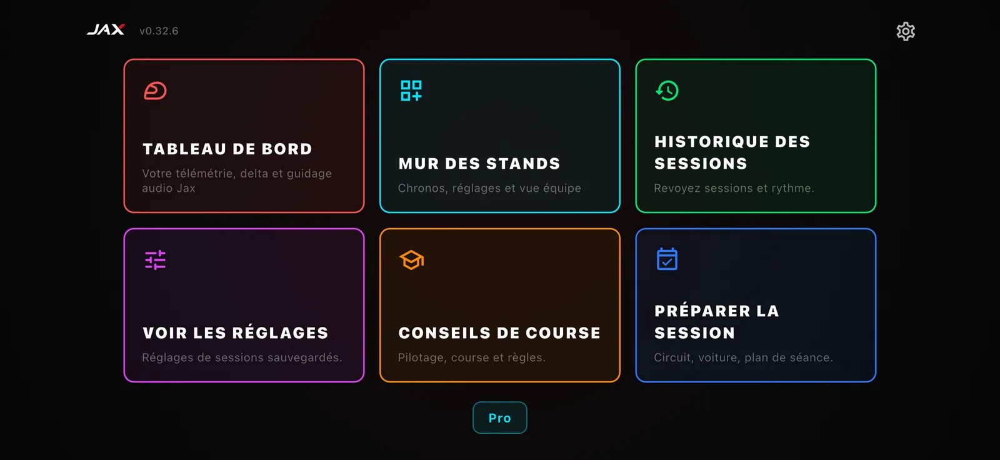
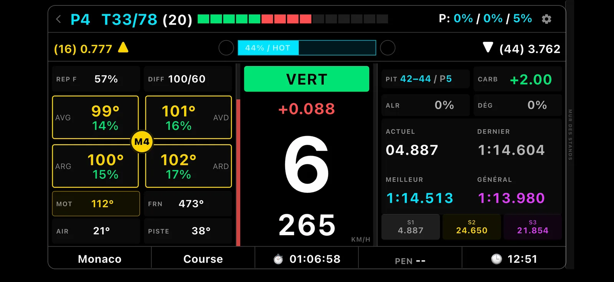
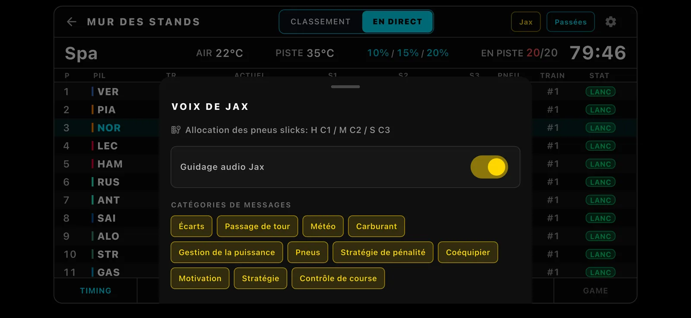
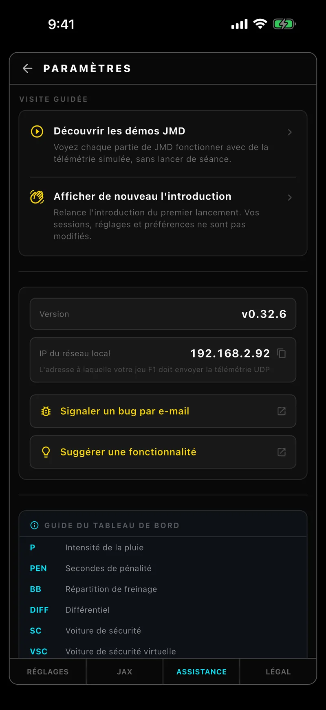

Aucune télémétrie reçue
Vérifiez que la télémétrie UDP est activée dans le jeu, que l'adresse IP correspond à celle affichée dans l'onglet RÉGLAGES de JMD, que le port correspond et que les deux appareils sont sur le même réseau.
Compagnon de sim racing pour iPhone
Configurez la télémétrie une seule fois. Ensuite, préparez, pilotez et analysez — avec votre iPhone sur le même réseau que votre console ou votre PC.
Comment ça marche
Chaque guide explique une partie de l’app : ce que vous voyez, où toucher, et ce qui est gratuit ou compris dans Jax Pro.
Installez JMD sur votre iPhone. Une courte visite guidée présente l'essentiel au premier lancement — vous pourrez la revoir plus tard depuis les Réglages. Aucun compte requis.

JMD reçoit la télémétrie de votre jeu sur votre réseau local. La configuration se fait une seule fois dans le jeu.

Facultatif, mais utile. Ouvrez Préparer la session depuis l'accueil, choisissez le circuit et la voiture, puis étudiez la piste — ou passez à la vue session pour planifier les essais, les qualifications ou la course.
Ouvrez le Tableau de bord, puis prenez la piste. JMD attend la télémétrie et se connecte dès que votre jeu commence à l'envoyer.
Placez votre appareil là où vous pouvez le lire d'un coup d'œil. La légende intégrée explique chaque abréviation du tableau de bord.

Choisissez la voix de Jax et les catégories à entendre dans Réglages, onglet JAX. En pleine session, le bouton Jax du mur des stands vous permet de les ajuster sans quitter la voiture.

Touchez la poignée du mur des stands sur le tableau de bord pour voir les chronos, la carte en direct, votre voiture, les traces, les réglages et les détails de la session. Touchez à nouveau pour revenir au tableau de bord.

À la fin d'une session, JMD la reconnaît et l'enregistre dans l'historique des sessions. Après une course, il vous indique votre position finale et vous permet de corriger la façon dont la course s'est terminée au besoin. Si la télémétrie s'arrête avant la fin évidente de la session, JMD vous pose la question.
Ouvrez l'historique des sessions depuis l'accueil pour retrouver n'importe quelle session enregistrée. Chaque analyse s'adapte au type de session : le rythme pour les essais et les qualifications, toute l'histoire pour les courses.

Pour les courses et les courses sprint, ouvrez la session dans l'historique pour lancer Race Replay : la tour de chronométrage, les écarts, les pneus et les événements de course, tour par tour.
Dans les Paramètres, l'onglet RÉGLAGES regroupe votre statut Jax Pro, la langue et les unités, la connexion UDP, le suivi des sessions, la sauvegarde iCloud (sauvegarder maintenant, restaurer) et la durée de conservation des données de course. L'onglet ASSISTANCE propose les démos intégrées, la visite de démarrage, l'adresse IP de l'appareil, le signalement de bogues et le guide du tableau de bord. L'onglet LÉGAL donne accès aux conditions et à la politique de confidentialité.

Soutien
Vérifiez que la télémétrie UDP est activée dans le jeu, que l'adresse IP correspond à celle affichée dans l'onglet RÉGLAGES de JMD, que le port correspond et que les deux appareils sont sur le même réseau.
Assurez-vous que l'appareil est resté connecté au Wi-Fi, que le mode économie d'énergie n'a pas interrompu l'app et que la console n'a pas changé de réseau.
Les adresses IP locales peuvent changer d'une session à l'autre. Revérifiez l'onglet RÉGLAGES dans JMD et mettez à jour les paramètres de télémétrie du jeu au besoin.
Vérifiez le volume et le mode silencieux de l'appareil, puis assurez-vous que la voix de Jax et les catégories voulues sont activées dans l'onglet JAX des Réglages ou avec le bouton Jax du mur des stands.
Race Replay est offert pour les courses et les courses sprint captées avec assez de détails. Les essais, les qualifications et le contre-la-montre ont leur propre analyse, axée sur le rythme.
Les sessions de jeu n'envoient pas toutes chaque champ. JMD affiche les données manquantes comme manquantes plutôt que de deviner.